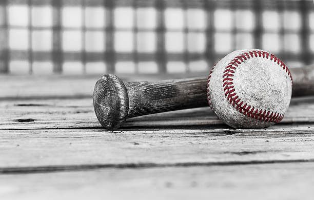
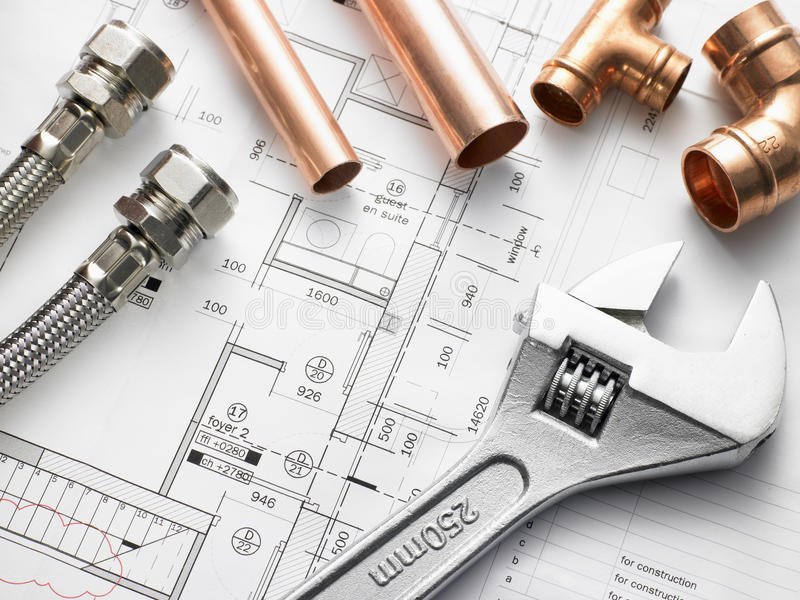

Playing Music

I have played music for many years now. Starting with the drums and then moving on to learn guitar
and bass guitar. I teach beginner music every week in the Contra Costa County and Marin County area. Even though it can be demanding
at times, It is something I am very grateful to do, and it is very fulfilling for me in my life.
Sports

I enjoy watching sports, especially from bay area teams, such as; 49ers football, Warriors basketball
and SF Giants baseball. As a kid and teenager I used to play baseball almost everyday, and I still play
baseball atleast once or twice a month with friends. Though I am not that good at soccer, I watch soccer alot as well
I enjoy watching international soccer as well as playing FIFA on a regular basis.
Plumbing

I enjoy knowing how to do plumbing. My dad is a plumbing contractor and my brother is a union plumber,
so needless to say it rubbed off on me as well. I feel there is an artistry in connecting pipes and making
water run through water supplylines, as well as a feeling of accomplishment when fixing a leak or stoppages
in a home.